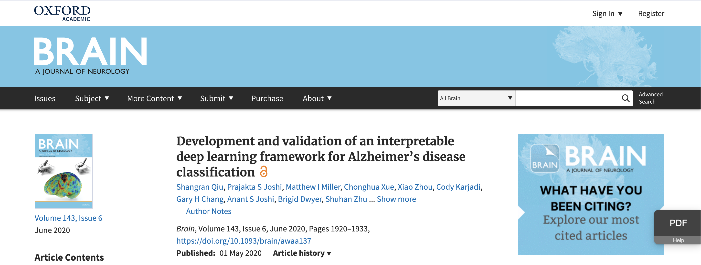

Explainable AI on Alzheimer’s Disease
Super excited to share our latest publication in Brain! [paper link] [Github link] An explainable deep learning framework was developed to visualize 3D high resolution Alzheimer's disease saliency map in brain MRI. The color from the figure below represents patient's disease probability ranging from blue(healthy) to red(severe). Model's diagnostic performance was compared to 11 neurologists. Accuracy of the predicted high risk regions was also verified by comparing with the brain autopsy data (medical ground truth).
MRI Image Enhancement
We developed a dual-purpose Generative Adversarial Network [paper link] [Github link] to enhance MRI image quality and disease classification accuracy. Demonstrated consistent image quality improvement on 4 image quality metrics (SNR, SSIM, NIQE and BRISQUE) and classification performance boost over 3 datasets.
Early Detection of Alzheimer's Disease

We developed a multi-modal deep learning framework to detect early stage of Alzheirmer's disease from health control [paper link]. Transfer Learning strategy was utilized to classify the MRI images using modified VGG model. The predictions from MRI-based models were then merged with the predictions from two Multilayer Perceptron models using a set of voting scheme. .
Knee Pain Visualization

We developed a convolutional Siamese network to access knee pain from knee MRI [paper link]. [Github link] Siamese network took pair-wised left and right knee MRI slices to classify whether left or right knee is associated with knee pain among subjects with unilateral frequent knee pain. Class Activation Mapping (CAM) from the Siamese network was used to highlight knee pain regions. The MRI scans and the CAMs of each subject were reviewed by an expert radiologist to identify the presence of abnormalities within the model-predicted regions of high association.